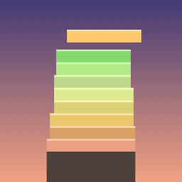

STRATES
Apila. Apunta bien. Sube. Un juego de habilidad con un dedo para iPhone.
Contacto
¿Un error, una pregunta, una idea? Escríbenos, solemos responder en pocos días.
contact@stelmo.frSi tienes un problema, indica si puedes el modelo de tu iPhone, tu versión de iOS y lo que ha pasado.
Cómo jugar
Una capa se desliza de un lado a otro sobre tu torre. Toca la pantalla para soltarla: todo lo que sobresale se corta y cae. Tu torre se estrecha con cada imprecisión y la partida termina cuando fallas por completo.
Coloca una capa exactamente sobre la anterior para lograr un Perfecto. A partir de tres perfectos seguidos, la torre vuelve a ensancharse un poco: es la única forma de recuperar margen. Cuanto más subes, más rápido van las capas, y el cielo pasa del atardecer a la noche estrellada.
- Jugar: una torre distinta en cada partida, para batir tu récord.
- Reto diario: la misma torre para todos, cada día. Solo tu primer intento cuenta en la clasificación del día; los siguientes son de práctica.
- Objetivos: 18 retos personales por desbloquear, de «10 capas en una partida» a «25 colocaciones perfectas seguidas».
Preguntas frecuentes
El juego no vibra.
Comprueba que la respuesta háptica del sistema está activada en Ajustes › Sonidos y vibraciones › Vibraciones del sistema.
¿A qué hora cambia el reto diario?
El reto sigue la fecha de tu iPhone y cambia a medianoche. Apple reinicia cada día la clasificación diaria de Game Center.
He fallado mi intento oficial, ¿puedo volver a jugar?
Sí, todo lo que quieras, pero como práctica: solo el primer intento del día se envía a la clasificación diaria. Las partidas de práctica cuentan igualmente para tu récord y tus objetivos.
¿Cómo pongo a cero mi récord y mis objetivos?
Solo se guardan en tu iPhone. Borrar y volver a instalar la app los pone a cero.
No aparezco en la clasificación.
Las clasificaciones usan Game Center: inicia sesión en Ajustes › Game Center y juega una partida. Tu puntuación se envía al final de cada partida.
¿Hace falta conexión a internet?
No para jugar: Strates funciona sin conexión. Solo la necesitas para enviar tu puntuación y consultar las clasificaciones.
¿Hay anuncios o compras integradas?
No, ninguno.
Privacidad
Strates no recopila ningún dato personal. El juego no pide ninguna cuenta, no muestra anuncios y no usa herramientas de medición de audiencia. El desarrollador no tiene ningún servidor y no recibe ningún dato.
En tu dispositivo: tu récord, tus estadísticas de juego, tu racha de retos diarios y tus objetivos desbloqueados se guardan localmente. Desaparecen si borras la app.
Clasificaciones de Game Center: si has iniciado sesión en Game Center, tu puntuación se envía a Apple al final de cada partida, a la clasificación Récord y, para tu intento oficial del día, a la clasificación Reto diario. Tu apodo de Game Center y tu puntuación son entonces visibles para otros jugadores en esas clasificaciones. Apple gestiona estos datos según su política de privacidad. Para no participar, basta con no iniciar sesión en Game Center; también puedes gestionar tu visibilidad en Ajustes › Game Center.
Para cualquier pregunta sobre privacidad, escribe a contact@stelmo.fr.
Última actualización: 6 de noviembre de 2026.